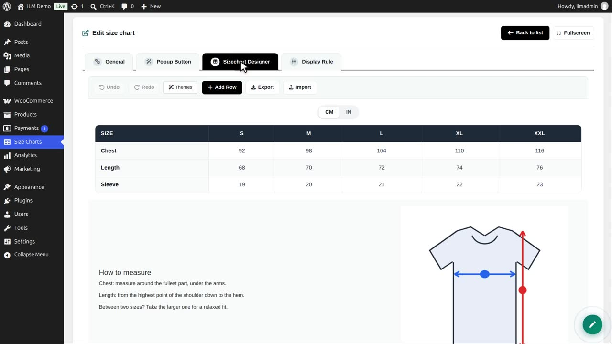
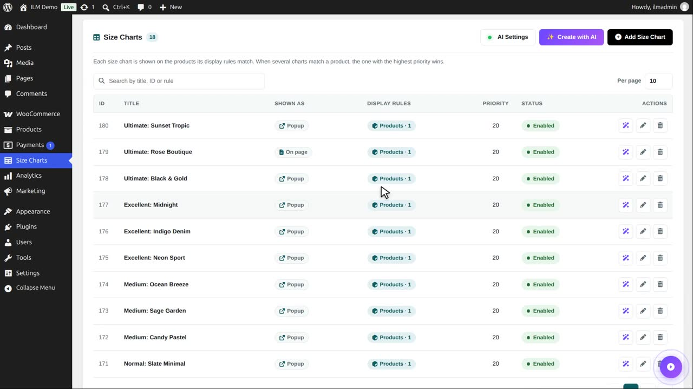
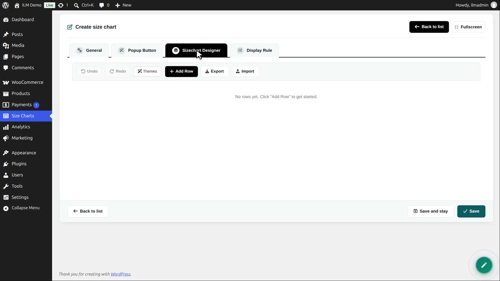
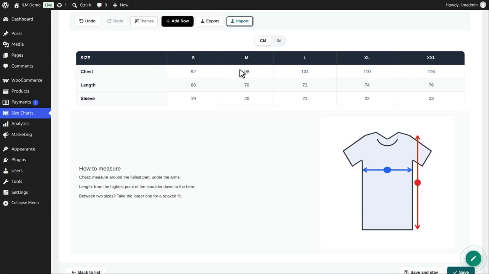
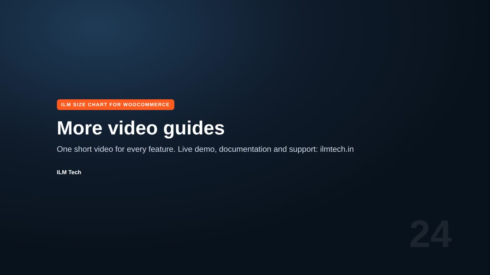

| Toolbar button | What it does |
|---|---|
| Export / Import | Saves the design as a file, or loads a design file — to copy a chart to another chart or shop. |
Edit the chart and open the designer. Export and Import are in the designer toolbar.

Export downloads the whole design as a small file: rows, columns, tables, texts, pictures and styles.

Now open another chart, here a new one, and click Import in its designer.

Choose the exported file. The same design is loaded into this chart.

This also copies a design from a test shop to your live shop. Give the chart a title and display rules, and save it.
